Магазин и прогулки: куда разложить?
Алина, по твоему фидбеку (28.09) уже сделали: «Задания» → «Работа», цель наверху, «Магазин» и «Прогулки» — отдельные кнопки, кровать / дверь / копилка нажимаются. Осталось «Дом / Развлечения / Магазин» и прогулки каруселью. Ниже 0 — как сейчас, и три варианта. Какой берём (или что поменять)? Это макеты: числа и арт взяты из игры, раскладка — предложение.
0 — как сейчас
Нижняя панель: План · Работа · Магазин · Прогулки · Копилка · Прогресс. Магазин — вкладки «Еда · Хочу · Одежда», прогулки — карточки списком.
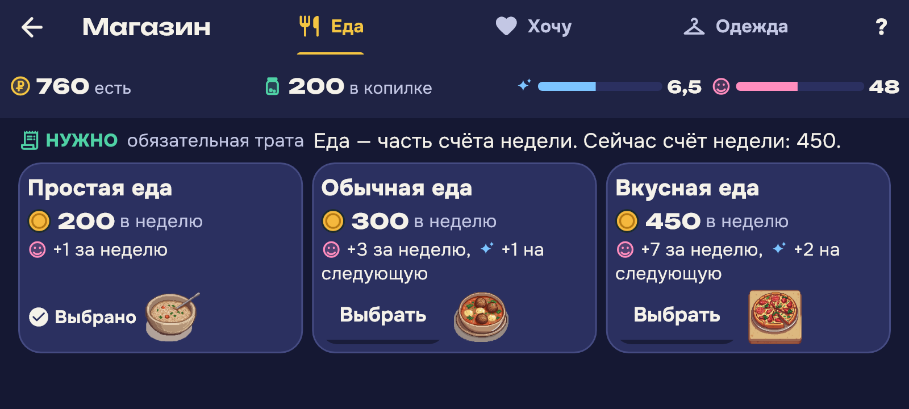
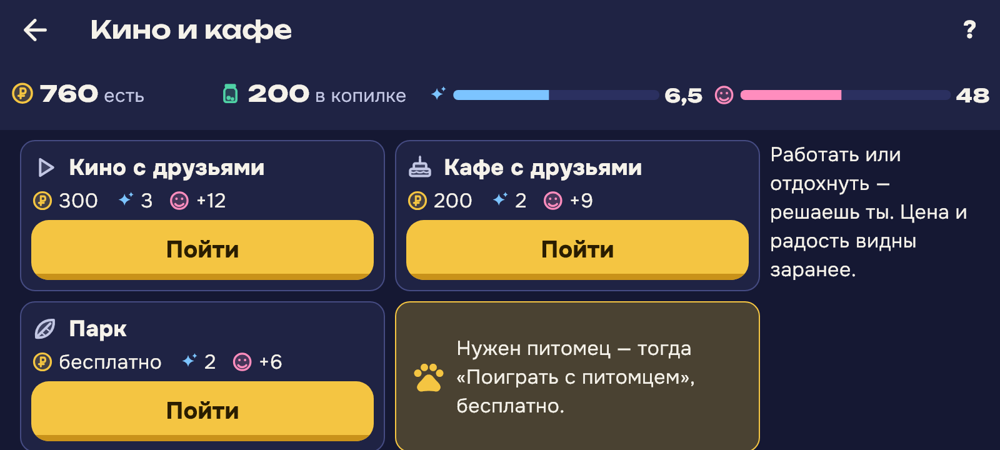
A — Дом и Магазин внутри магазина, Развлечения = карусель прогулок предлагаем
Панель внизу та же. В магазине вкладки по смыслу: «Еда · Для дома · Одежда». «Прогулки» — места каруселью: одно большое в центре, листаешь стрелками или пальцем.
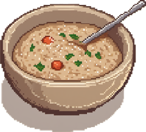
Простая еда200 в неделюВыбрано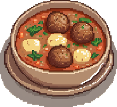
Обычная еда300 в неделюВыбрать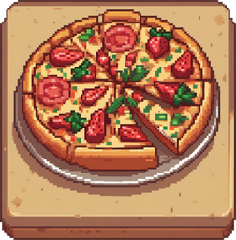
Вкусная еда450 в неделюВыбрать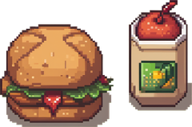
Перекус120Купить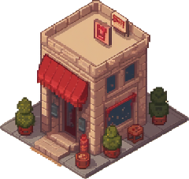
Кино300 · ⚡3 · 😊+12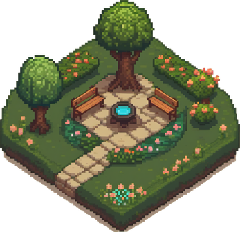
Паркбесплатно · ⚡2 · 😊+6Пойти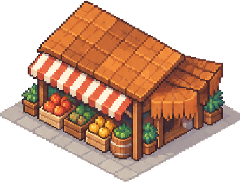
Кафе200 · ⚡2 · 😊+9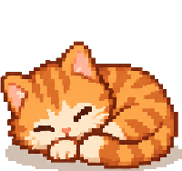
С питомцемдома · бесплатно- + Панель, к которой уже привыкли в этапе 1, не меняется; «Дом» — это вещи для комнаты, «Развлечения» — прогулки
- + Карусель показывает место картинкой — ребёнок выбирает глазами, а не читает список
- − Слово «Развлечения» не появляется как кнопка — оно спрятано в «Прогулки»
B — три вкладки: Дом · Развлечения · Магазин (+ Работа)
Нижняя панель из четырёх крупных кнопок. Каждая открывает «хаб» с большими плитками.
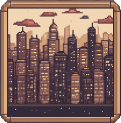
План недели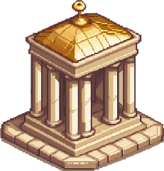
Копилка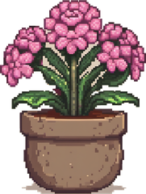
Прогресс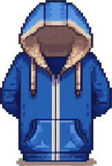
Одежда и вещи- + Ровно три смысла, как у тебя в фидбеке; кнопки крупнее
- − До копилки и плана — два нажатия вместо одного
- − Переделка всей навигации за сутки до заморозки: больше риск что-то сломать
C — только карусель мест под картой города
Магазин и панель как сейчас. В городе под картой — полоса «Куда пойдём?» с местами для прогулки.
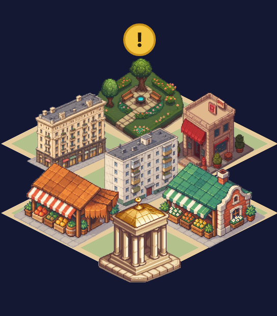
- + Меньше всего переделки; прогулки видно прямо в городе
- − Категорий «Дом / Развлечения / Магазин» нет — это твой пункт 5, он уходит в финал